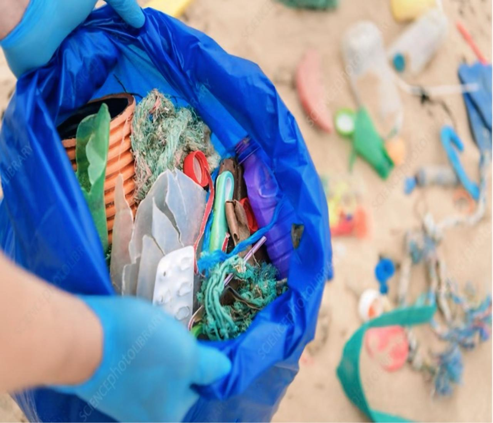

<!DOCTYPE html>
<html lang="en">
    <meta charset="UTF-8">
    <meta name="viewport" content="width=device-width, initial-scale=1.0">
    <link rel="stylesheet" href="volunteeropportunities.css">
    <title>Volunteer Opportunities</title>
</html>

<body>
   <div class="section">
        <div class="title"> 
            <h1> Volunteer Opportunities </h1>
        </div>
        <div class="title-section">
            <h2> Sneak Peek of Volunteer Opportunities </h2>
        </div>


        
        <div class="content">
            <h3> 1. Water Conservation Initiative </h3>
            <div class="image-section"> 
                
            </div>
            <p>  Join our efforts to educate local communities on water-saving techniques and assist in building rainwater harvesting systems in the High Atlas Mountains. This 1-week project offers a hands-on experience in sustainable water management. </p>
            
            <a href="" class="button"> Read more </a>
            
        </div>


        <div class="content">
            <h3> 2. Waste Reduction Campaign </h3>
            <div class="image-section"> 
                
            </div>
            <p> Participate in organizing beach clean-ups along Morocco’s Atlantic coast and teach locals about effective waste management and recycling practices. This 5-day project combines environmental conservation with community education. </p>
            
            <a href="" class="button"> Read more </a>

        </div>


        <div class="content">
            <h3> 3. Literacy and Education Support </h3>
            <div class="image-section"> 
                
            </div>
            <p> Help combat illiteracy in rural villages by conducting literacy workshops, providing educational resources, and tutoring children. This 2-week project focuses on empowering local communities through education. </p>
            
            <a href="" class="button"> Read more </a>

        </div>


        
        <div class="btn">
            <a href="" class="button"> View All Volunteer Opportunities </a>
        </div>
        

   </div>

</body>
